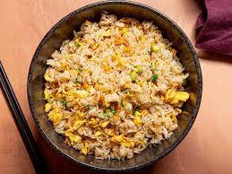

Instructions
- First chop the spam and carrots
- Lightly beat the eggs
- Add the 1 teaspoon of oil until the wok until hot
- Add the Diced Spam and carrots into the wok
- Add the rice and egg together and then mix everything
- Add the soy sauce and oyster sauce with the pinch of salt
- Then Enjoy

Go back